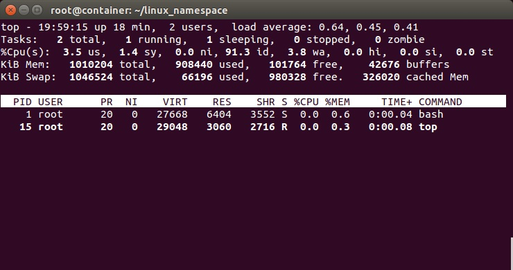
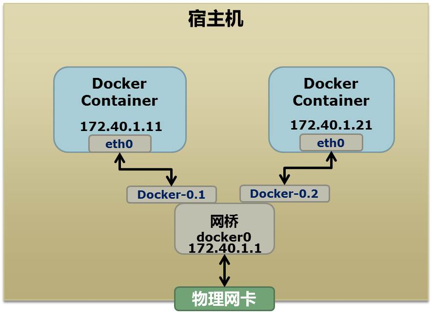

Docker基础技术
Table of Contents
Namespace
Linux Namespace是Linux提供的一种内核级别环境隔离的方法。很早以前的Unix有一个叫chroot的系统调用（通过修改根目录把用户jail到一个特定目录下），chroot提供了一种简单的隔离模式：chroot内部的文件系统无法访问外部的内容。Linux Namespace在此基础上，提供了对UTS、IPC、mount、PID、network、User等的隔离机制
Linux Namespace 有如下种类：
| 分类 | 系统调用 | 内核版本 |
| Mount namespaces | CLONE_NEWNS | Linux 2.4.19 |
| UTS namespaces | CLONE_NEWUTS | Linux 2.6.19 |
| IPC namespaces | CLONE_NEWIPC | Linux 2.6.19 |
| PID namespaces | CLONE_NEWPID | Linux 2.6.24 |
| Network namespaces | CLONE_NEWNET | 始于Linux 2.6.24 完成于 Linux 2.6.29 |
| User namespaces | CLONE_NEWUSER | 始于 Linux 2.6.23 完成于 Linux 3.8 |
系统调用
主要是三个系统调用：
- clone()：实现线程的系统调用，用来创建一个新的进程，并可以通过设计上述参数达到隔离
- unshare()：使某进程脱离某个namespace
- setns()：把某进程加入到某个namespace
unshare() 和 setns() 都比较简单
clone
首先，我们来看一下一个最简单的clone()系统调用的示例：
#define _GNU_SOURCE #include <sys/types.h> #include <sys/wait.h> #include <stdio.h> #include <sched.h> #include <signal.h> #include <unistd.h> /* 定义一个给 clone 用的栈，栈大小1M */ #define STACK_SIZE (1024 * 1024) static char container_stack[STACK_SIZE]; char* const container_args[] = { "/bin/bash", NULL }; int container_main(void* arg) { printf("Container - inside the container!\n"); /* 直接执行一个shell，以便我们观察这个进程空间里的资源是否被隔离了 */ execv(container_args[0], container_args); printf("Something's wrong!\n"); return 1; } int main() { printf("Parent - start a container!\n"); /* 调用clone函数，其中传出一个函数，还有一个栈空间的（为什么传尾指针，因为栈是反着的） */ int container_pid = clone(container_main, container_stack+STACK_SIZE, SIGCHLD, NULL); /* 等待子进程结束 */ waitpid(container_pid, NULL, 0); printf("Parent - container stopped!\n"); return 0; }
从上面的程序，可以看到，这和pthread基本上是一样的玩法。但是，对于上面的程序，父子进程的进程空间是没有什么差别的，父进程能访问到的子进程也能
UTS Namespace
int container_main(void* arg) { printf("Container - inside the container!\n"); sethostname("container",10); /* 设置hostname */ execv(container_args[0], container_args); printf("Something's wrong!\n"); return 1; } int main() { printf("Parent - start a container!\n"); int container_pid = clone(container_main, container_stack+STACK_SIZE, CLONE_NEWUTS | SIGCHLD, NULL); /*启用CLONE_NEWUTS Namespace隔离 */ waitpid(container_pid, NULL, 0); printf("Parent - container stopped!\n"); return 0; }
运行上面的程序你会发现（需要root权限）
klose@gentoo:~$ sudo ./uts Parent - start a container! Container - inside the container! root@container:~$ hostname container root@container:~$ uname -n container
子进程的hostname变成了 container。
IPC Namespace
IPC全称 Inter-Process Communication，是Unix/Linux下进程间通信的一种方式，IPC有共享内存、信号量、消息队列等方法。所以，为了隔离，我们也需要把IPC给隔离开来，这样，只有在同一个Namespace下的进程才能相互通信。如果你熟悉IPC的原理的话，你会知道，IPC需要有一个全局的ID，即然是全局的，那么就意味着我们的Namespace需要对这个ID隔离，不能让别的Namespace的进程看到
要启动IPC隔离，我们只需要在调用clone时加上CLONE_NEWIPC参数就可以了：
int container_pid = clone(container_main, container_stack+STACK_SIZE, CLONE_NEWUTS | CLONE_NEWIPC | SIGCHLD, NULL);
首先，我们先创建一个IPC的Queue：
klose@gentoo:~$ ipcmk -Q Message queue id: 0 klose@gentoo:~$ ipcs -q ------ Message Queues -------- key msqid owner perms used-bytes messages 0xd0d56eb2 0 hchen 644 0 0
如果我们运行没有CLONE_NEWIPC的程序，我们会看到，在子进程中还是能看到这个全启的IPC Queue：
klose@gentoo:~$ sudo ./uts Parent - start a container! Container - inside the container! root@container:~$ ipcs -q ------ Message Queues -------- key msqid owner perms used-bytes messages 0xd0d56eb2 0 hchen 644 0 0
但是，如果我们运行加上了CLONE_NEWIPC的程序，就会看到下面的结果：
root@ubuntu:~$ sudo./ipc Parent - start a container! Container - inside the container! root@container:~/linux_namespace$ ipcs -q ------ Message Queues -------- key msqid owner perms used-bytes messages
这说明IPC已经被隔离
PID Namespace
继续修改上面的程序：
int container_main(void* arg) { /* 查看子进程的PID，我们可以看到其输出子进程的 pid 为 1 */ printf("Container [%5d] - inside the container!\n", getpid()); sethostname("container",10); execv(container_args[0], container_args); printf("Something's wrong!\n"); return 1; } int main() { printf("Parent [%5d] - start a container!\n", getpid()); /*启用PID namespace - CLONE_NEWPID*/ int container_pid = clone(container_main, container_stack+STACK_SIZE, CLONE_NEWUTS | CLONE_NEWPID | SIGCHLD, NULL); waitpid(container_pid, NULL, 0); printf("Parent - container stopped!\n"); return 0; }
运行结果如下，可以看到，子进程的pid是1了：
klose@gentoo:~$ sudo ./pid
Parent [ 3474] - start a container!
Container [ 1] - inside the container!
root@container:~$ echo $$ 1
在传统的UNIX系统中，PID为1的进程是init，地位非常特殊。他作为所有进程的父进程，有很多特权（比如：屏蔽信号等），另外，其还会为检查所有进程的状态，我们知道，如果某个子进程脱离了父进程（父进程没有wait它），那么init就会负责回收资源并结束这个子进程。所以，要做到进程空间的隔离，首先要创建出PID为1的进程，最好就像chroot那样，把子进程的PID在容器内变成1
但是，我们会发现，在子进程的shell里输入ps, top等命令，我们还是可以看得到所有进程。说明并没有完全隔离。这是因为，像ps, top这些命令会去读/proc文件系统，所以，因为/proc文件系统在父进程和子进程都是一样的，所以这些命令显示的东西都是一样的.。因此我们还需要对文件系统进行隔离
Mount Namespace
下面的例程中，我们在启用了mount namespace并在子进程中重新mount了/proc文件系统：
int container_main(void* arg) { printf("Container [%5d] - inside the container!\n", getpid()); sethostname("container",10); /* 重新mount proc文件系统到 /proc下 */ system("mount -t proc proc /proc"); execv(container_args[0], container_args); printf("Something's wrong!\n"); return 1; } int main() { printf("Parent [%5d] - start a container!\n", getpid()); /* 启用Mount Namespace - 增加CLONE_NEWNS参数 */ int container_pid = clone(container_main, container_stack+STACK_SIZE, CLONE_NEWUTS | CLONE_NEWPID | CLONE_NEWNS | SIGCHLD, NULL); waitpid(container_pid, NULL, 0); printf("Parent - container stopped!\n"); return 0; }
运行结果如下：
klose@gentoo:~$ sudo ./pid.mnt Parent [ 3502] - start a container! Container [ 1] - inside the container! root@container:~$ ps -elf F S UID PID PPID C PRI NI ADDR SZ WCHAN STIME TTY TIME CMD 4 S root 1 0 0 80 0 - 6917 wait 19:55 pts/2 00:00:00 /bin/bash 0 R root 14 1 0 80 0 - 5671 - 19:56 pts/2 00:00:00 ps -elf
我们可以看到只有两个进程 ，而且pid=1的进程是我们的/bin/bash。我们还可以看到/proc目录下也干净了很多：
root@container:~$ ls /proc 1 dma key-users net sysvipc 16 driver kmsg pagetypeinfo timer_list acpi execdomains kpagecount partitions timer_stats asound fb kpageflags sched_debug tty buddyinfo filesystems loadavg schedstat uptime bus fs locks scsi version cgroups interrupts mdstat self version_signature cmdline iomem meminfo slabinfo vmallocinfo consoles ioports misc softirqs vmstat cpuinfo irq modules stat zoneinfo crypto kallsyms mounts swaps devices kcore mpt sys diskstats keys mtrr sysrq-trigger
下图，我们也可以看到在子进程中的top命令只看得到两个进程了：

注意：在通过CLONE_NEWNS创建mount namespace后，父进程会把自己的文件结构复制给子进程中。而子进程中新的namespace中的所有mount操作都只影响自身的文件系统，而不对外界产生任何影响。这样可以做到比较严格地隔离
Docker的 Mount Namespace
首先，需要一个rootfs，也就是需要把要做的镜像中的那些命令什么的copy到一个rootfs的目录下，模仿Linux构建如下的目录：
hchen@ubuntu:~/rootfs$ ls bin dev etc home lib lib64 mnt opt proc root run sbin sys tmp usr var
然后，我们把一些我们需要的命令copy到 rootfs/bin目录中（sh命令必需要copy进去，不然我们无法 chroot ）：
hchen@ubuntu:~/rootfs$ ls ./bin ./usr/bin ./bin: bash chown gzip less mount netstat rm tabs tee top tty cat cp hostname ln mountpoint ping sed tac test touch umount chgrp echo ip ls mv ps sh tail timeout tr uname chmod grep kill more nc pwd sleep tar toe truncate which ./usr/bin: awk env groups head id mesg sort strace tail top uniq vi wc xargs
注意：你可以使用ldd命令把这些命令相关的那些so文件copy到对应的目录：
hchen@ubuntu:~/rootfs/bin$ ldd bash
linux-vdso.so.1 => (0x00007fffd33fc000)
libtinfo.so.5 => /lib/x86_64-linux-gnu/libtinfo.so.5 (0x00007f4bd42c2000)
libdl.so.2 => /lib/x86_64-linux-gnu/libdl.so.2 (0x00007f4bd40be000)
libc.so.6 => /lib/x86_64-linux-gnu/libc.so.6 (0x00007f4bd3cf8000)
/lib64/ld-linux-x86-64.so.2 (0x00007f4bd4504000)
下面是我的rootfs中的一些so文件：
hchen@ubuntu:~/rootfs$ ls ./lib64 ./lib/x86_64-linux-gnu/ ./lib64: ld-linux-x86-64.so.2 ./lib/x86_64-linux-gnu/: libacl.so.1 libmemusage.so libnss_files-2.19.so libpython3.4m.so.1 libacl.so.1.1.0 libmount.so.1 libnss_files.so.2 libpython3.4m.so.1.0 libattr.so.1 libmount.so.1.1.0 libnss_hesiod-2.19.so libresolv-2.19.so libblkid.so.1 libm.so.6 libnss_hesiod.so.2 libresolv.so.2 libc-2.19.so libncurses.so.5 libnss_nis-2.19.so libselinux.so.1 libcap.a libncurses.so.5.9 libnss_nisplus-2.19.so libtinfo.so.5 libcap.so libncursesw.so.5 libnss_nisplus.so.2 libtinfo.so.5.9 libcap.so.2 libncursesw.so.5.9 libnss_nis.so.2 libutil-2.19.so libcap.so.2.24 libnsl-2.19.so libpcre.so.3 libutil.so.1 libc.so.6 libnsl.so.1 libprocps.so.3 libuuid.so.1 libdl-2.19.so libnss_compat-2.19.so libpthread-2.19.so libz.so.1 libdl.so.2 libnss_compat.so.2 libpthread.so.0 libgpm.so.2 libnss_dns-2.19.so libpython2.7.so.1 libm-2.19.so libnss_dns.so.2 libpython2.7.so.1.0
包括这些命令依赖的一些配置文件：
hchen@ubuntu:~/rootfs$ ls ./etc bash.bashrc group hostname hosts ld.so.cache nsswitch.conf passwd profile resolv.conf shadow
你现在会说，我靠，有些配置我希望是在容器起动时给他设置的，而不是hard code在镜像中的。比如：/etc/hosts，/etc/hostname，还有DNS的/etc/resolv.conf文件。好的。那我们在rootfs外面，我们再创建一个conf目录，把这些文件放到这个目录中：
hchen@ubuntu:~$ ls ./conf hostname hosts resolv.conf
这样，我们的父进程就可以动态地设置容器需要的这些文件的配置， 然后再把他们mount进容器，这样，容器的镜像中的配置就比较灵活了。
好了，终于到了我们的程序：
#define _GNU_SOURCE #include <sys/types.h> #include <sys/wait.h> #include <sys/mount.h> #include <stdio.h> #include <sched.h> #include <signal.h> #include <unistd.h> #define STACK_SIZE (1024 * 1024) static char container_stack[STACK_SIZE]; char* const container_args[] = { "/bin/bash", "-l", NULL }; int container_main(void* arg) { printf("Container [%5d] - inside the container!\n", getpid()); //set hostname sethostname("container",10); //remount "/proc" to make sure the "top" and "ps" show container's information if (mount("proc", "rootfs/proc", "proc", 0, NULL) !=0 ) { perror("proc"); } if (mount("sysfs", "rootfs/sys", "sysfs", 0, NULL)!=0) { perror("sys"); } if (mount("none", "rootfs/tmp", "tmpfs", 0, NULL)!=0) { perror("tmp"); } if (mount("udev", "rootfs/dev", "devtmpfs", 0, NULL)!=0) { perror("dev"); } if (mount("devpts", "rootfs/dev/pts", "devpts", 0, NULL)!=0) { perror("dev/pts"); } if (mount("shm", "rootfs/dev/shm", "tmpfs", 0, NULL)!=0) { perror("dev/shm"); } if (mount("tmpfs", "rootfs/run", "tmpfs", 0, NULL)!=0) { perror("run"); } /* * 模仿Docker的从外向容器里mount相关的配置文件 * 你可以查看：/var/lib/docker/containers/<container_id>/目录， * 你会看到docker的这些文件的。 */ if (mount("conf/hosts", "rootfs/etc/hosts", "none", MS_BIND, NULL)!=0 || mount("conf/hostname", "rootfs/etc/hostname", "none", MS_BIND, NULL)!=0 || mount("conf/resolv.conf", "rootfs/etc/resolv.conf", "none", MS_BIND, NULL)!=0 ) { perror("conf"); } /* 模仿docker run命令中的 -v, --volume=[] 参数干的事 */ if (mount("/tmp/t1", "rootfs/mnt", "none", MS_BIND, NULL)!=0) { perror("mnt"); } /* chroot 隔离目录 */ if ( chdir("./rootfs") != 0 || chroot("./") != 0 ){ perror("chdir/chroot"); } execv(container_args[0], container_args); perror("exec"); printf("Something's wrong!\n"); return 1; } int main() { printf("Parent [%5d] - start a container!\n", getpid()); int container_pid = clone(container_main, container_stack+STACK_SIZE, CLONE_NEWUTS | CLONE_NEWIPC | CLONE_NEWPID | CLONE_NEWNS | SIGCHLD, NULL); waitpid(container_pid, NULL, 0); printf("Parent - container stopped!\n"); return 0; }
sudo运行上面的程序，会看到下面的挂载信息以及一个所谓的“镜像”：
hchen@ubuntu:~$ sudo ./mount Parent [ 4517] - start a container! Container [ 1] - inside the container! root@container:/$ mount proc on /proc type proc (rw,relatime) sysfs on /sys type sysfs (rw,relatime) none on /tmp type tmpfs (rw,relatime) udev on /dev type devtmpfs (rw,relatime,size=493976k,nr_inodes=123494,mode=755) devpts on /dev/pts type devpts (rw,relatime,mode=600,ptmxmode=000) tmpfs on /run type tmpfs (rw,relatime) /dev/disk/by-uuid/18086e3b-d805-4515-9e91-7efb2fe5c0e2 on /etc/hosts type ext4 (rw,relatime,errors=remount-ro,data=ordered) /dev/disk/by-uuid/18086e3b-d805-4515-9e91-7efb2fe5c0e2 on /etc/hostname type ext4 (rw,relatime,errors=remount-ro,data=ordered) /dev/disk/by-uuid/18086e3b-d805-4515-9e91-7efb2fe5c0e2 on /etc/resolv.conf type ext4 (rw,relatime,errors=remount-ro,data=ordered) root@container:/$ ls /bin /usr/bin /bin: bash chmod echo hostname less more mv ping rm sleep tail test top truncate uname cat chown grep ip ln mount nc ps sed tabs tar timeout touch tty which chgrp cp gzip kill ls mountpoint netstat pwd sh tac tee toe tr umount /usr/bin: awk env groups head id mesg sort strace tail top uniq vi wc xargs
关于如何做一个chroot的目录，有个工具叫DebootstrapChroot
User Namespace
User Namespace主要是用了CLONE_NEWUSER的参数。使用了这个参数后，内部看到的UID和GID已经与外部不同了，默认显示为65534。那是因为容器找不到其真正的UID所以，设置上了最大的UID（其设置定义在/proc/sys/kernel/overflowuid）
要把容器中的uid和真实系统的uid给映射在一起，需要修改 /proc/<pid>/uid_map 和 /proc/<pid>/gid_map 这两个文件，这两个文件的格式为：
ID-inside-ns ID-outside-ns length
- ID-inside-ns：表示在容器显示的UID或GID
- ID-outside-ns：表示容器外映射的真实的UID或GID
- length：表示映射的范围，一般填1，表示一一对应
比如，把真实的uid=1000映射成容器内的uid=0：
$ cat /proc/2465/uid_map 0 1000 1
再比如，把namespace内部从0开始的uid映射到外部从0开始的uid，其最大范围是无符号32位整形：
$ cat /proc/$$/uid_map
0 0 4294967295
需要注意的是：
- 写这两个文件的进程需要这个namespace中的CAP_SETUID (CAP_SETGID)权限
- 写入的进程必须是此user namespace的父或子的user namespace进程
- 另外需要满如下条件之一：
- 父进程将effective uid/gid映射到子进程的user namespace中
- 父进程如果有CAP_SETUID/CAP_SETGID权限，那么它将可以映射到父进程中的任一uid/gid
实例
我们用了一个pipe来对父子进程进行同步，这是因为子进程中有一个execv的系统调用，这个系统调用会把当前子进程的进程空间给全部覆盖掉，我们希望在execv之前就做好user namespace的uid/gid的映射，这样，execv运行的/bin/bash就会因为我们设置了uid为0的inside-uid而变成#号的提示符
#define _GNU_SOURCE #include <stdio.h> #include <stdlib.h> #include <sys/types.h> #include <sys/wait.h> #include <sys/mount.h> #include <linux/capability.h> #include <stdio.h> #include <sched.h> #include <signal.h> #include <unistd.h> #define STACK_SIZE (1024 * 1024) static char container_stack[STACK_SIZE]; char* const container_args[] = { "/bin/bash", NULL }; int pipefd[2]; void set_map(char* file, int inside_id, int outside_id, int len) { FILE* mapfd = fopen(file, "w"); if (NULL == mapfd) { perror("open file error"); return; } fprintf(mapfd, "%d %d %d", inside_id, outside_id, len); fclose(mapfd); } void set_uid_map(pid_t pid, int inside_id, int outside_id, int len) { char file[256]; sprintf(file, "/proc/%d/uid_map", pid); set_map(file, inside_id, outside_id, len); } void set_gid_map(pid_t pid, int inside_id, int outside_id, int len) { char file[256]; sprintf(file, "/proc/%d/gid_map", pid); set_map(file, inside_id, outside_id, len); } int container_main(void* arg) { printf("Container [%5d] - inside the container!\n", getpid()); printf("Container: eUID = %ld; eGID = %ld, UID=%ld, GID=%ld\n", (long) geteuid(), (long) getegid(), (long) getuid(), (long) getgid()); /* 等待父进程通知后再往下执行（进程间的同步） */ char ch; close(pipefd[1]); read(pipefd[0], &ch, 1); printf("Container [%5d] - setup hostname!\n", getpid()); //set hostname sethostname("container",10); //remount "/proc" to make sure the "top" and "ps" show container's information mount("proc", "/proc", "proc", 0, NULL); execv(container_args[0], container_args); printf("Something's wrong!\n"); return 1; } int main() { const int gid=getgid(), uid=getuid(); printf("Parent: eUID = %ld; eGID = %ld, UID=%ld, GID=%ld\n", (long) geteuid(), (long) getegid(), (long) getuid(), (long) getgid()); pipe(pipefd); printf("Parent [%5d] - start a container!\n", getpid()); int container_pid = clone(container_main, container_stack+STACK_SIZE, CLONE_NEWUTS | CLONE_NEWPID | CLONE_NEWNS | CLONE_NEWUSER | SIGCHLD, NULL); printf("Parent [%5d] - Container [%5d]!\n", getpid(), container_pid); //To map the uid/gid, // we need edit the /proc/PID/uid_map (or /proc/PID/gid_map) in parent //The file format is // ID-inside-ns ID-outside-ns length //if no mapping, // the uid will be taken from /proc/sys/kernel/overflowuid // the gid will be taken from /proc/sys/kernel/overflowgid set_uid_map(container_pid, 0, uid, 1); set_gid_map(container_pid, 0, gid, 1); printf("Parent [%5d] - user/group mapping done!\n", getpid()); /* 通知子进程 */ close(pipefd[1]); waitpid(container_pid, NULL, 0); printf("Parent - container stopped!\n"); return 0; }
整个程序的运行效果如下：
klose@ubuntu16-188 ~/$ id uid=1002(klose) gid=1002(klose) groups=1002(klose),100(users),999(docker) klose@ubuntu16-188 ~/ $ ./user_namespace Parent: eUID = 1002; eGID = 1002, UID=1002, GID=1002 Parent [ 5994] - start a container! Parent [ 5994] - Container [ 5996]! Container [ 1] - inside the container! Container: eUID = 0; eGID = 65534, UID=0, GID=65534 Parent [ 5994] - user/group mapping done! Container [ 1] - setup hostname! container namespace # id uid=0(root) gid=65534(nogroup) groups=65534(nogroup)
虽然容器里是root，但其实这个容器的/bin/bash进程是以一个普通用户hchen来运行的。这样一来，容器的安全性会得到提高。
User Namespace是以普通用户运行，但是别的Namespace需要root权限，那么，如果我要同时使用多个Namespace，该怎么办呢？一般来说，先用一般用户创建User Namespace，然后把这个一般用户映射成root，在容器内用root来创建其它的Namesapce
Network Namespace
Network的Namespace比较啰嗦，在Linux下，我们一般用ip命令创建Network Namespace（Docker的源码中，它没有用ip命令，而是自己实现了ip命令内的一些功能，通过使用了Raw Socket发些“奇怪”的数据）
首先，先看个图，下面这个图基本上就是Docker在宿主机上的网络示意图（其中的物理网卡并不准确，因为docker可能会运行在一个VM中，所以，这里所谓的“物理网卡”其实也就是一个有可以路由的IP的网卡）：

上图中，Docker使用了一个私有网段 172.40.1.0，docker还可能会使用10.0.0.0和192.168.0.0这两个私有网段，关键看你的路由表中是否配置了，如果没有配置，就会使用，如果你的路由表配置了所有私有网段，那么docker启动时就会出错了
当你启动一个Docker容器后，你可以使用ip link show或ip addr show来查看当前宿主机的网络情况（我们可以看到有一个docker0，还有一个veth22a38e6的虚拟网卡——给容器用的）：
hchen@ubuntu:~$ ip link show
1: lo: <LOOPBACK,UP,LOWER_UP> mtu 65536 qdisc noqueue state ...
link/loopback 00:00:00:00:00:00 brd 00:00:00:00:00:00
2: eth0: <BROADCAST,MULTICAST,UP,LOWER_UP> mtu 1500 qdisc ...
link/ether 00:0c:29:b7:67:7d brd ff:ff:ff:ff:ff:ff
3: docker0: <BROADCAST,MULTICAST,UP,LOWER_UP> mtu 1500 ...
link/ether 56:84:7a:fe:97:99 brd ff:ff:ff:ff:ff:ff
5: veth22a38e6: <BROADCAST,UP,LOWER_UP> mtu 1500 qdisc ...
link/ether 8e:30:2a:ac:8c:d1 brd ff:ff:ff:ff:ff:ff
那么，要如何才能做成这个样子呢？我们来看一组命令：
## 首先，我们先增加一个网桥lxcbr0，模仿docker0 brctl addbr lxcbr0 brctl stp lxcbr0 off ifconfig lxcbr0 192.168.10.1/24 up #为网桥设置IP地址 ## 接下来，我们要创建一个network namespace - ns1 # 增加一个namesapce 命令为 ns1 （使用ip netns add命令） ip netns add ns1 # 激活namespace中的loopback，即127.0.0.1（使用ip netns exec ns1来操作ns1中的命令） ip netns exec ns1 ip link set dev lo up ## 然后，我们需要增加一对虚拟网卡 # 增加一个pair虚拟网卡，注意其中的veth类型，其中一个网卡要按进容器中 ip link add veth-ns1 type veth peer name lxcbr0.1 # 把 veth-ns1 按到namespace ns1中，这样容器中就会有一个新的网卡了 ip link set veth-ns1 netns ns1 # 把容器里的 veth-ns1改名为 eth0 （容器外会冲突，容器内就不会了） ip netns exec ns1 ip link set dev veth-ns1 name eth0 # 为容器中的网卡分配一个IP地址，并激活它 ip netns exec ns1 ifconfig eth0 192.168.10.11/24 up # 上面我们把veth-ns1这个网卡按到了容器中，然后我们要把lxcbr0.1添加上网桥上 brctl addif lxcbr0 lxcbr0.1 # 为容器增加一个路由规则，让容器可以访问外面的网络 ip netns exec ns1 ip route add default via 192.168.10.1 # 在/etc/netns下创建network namespce名称为ns1的目录， # 然后为这个namespace设置resolv.conf，这样，容器内就可以访问域名了 mkdir -p /etc/netns/ns1 echo "nameserver 8.8.8.8" > /etc/netns/ns1/resolv.conf
上面基本上就是docker网络的原理了，只不过：
- Docker的resolv.conf没有用这样的方式，而是用了Mount Namesapce的那种方式
- docker是用进程的PID来做Network Namespace的名称的
甚至可以为正在运行的docker容器增加一个新的网卡：
ip link add peerA type veth peer name peerB
brctl addif docker0 peerA
ip link set peerA up
ip link set peerB netns ${container-pid}
ip netns exec ${container-pid} ip link set dev peerB name eth1
ip netns exec ${container-pid} ip link set eth1 up ;
ip netns exec ${container-pid} ip addr add ${ROUTEABLE_IP} dev eth1 ;
上面的示例是为正在运行的docker容器，增加一个eth1的网卡，并给了一个静态的可被外部访问到的IP地址
这个需要把外部的“物理网卡”配置成混杂模式，这样这个eth1网卡就会向外通过ARP协议发送自己的Mac地址，然后外部的交换机就会把到这个IP地址的包转到“物理网卡”上，因为是混杂模式，所以eth1就能收到相关的数据，一看，是自己的，那么就收到。这样，Docker容器的网络就和外部通了
无论是Docker的NAT方式，还是混杂模式都会有性能上的问题：
- NAT不用说了，存在一个转发的开销
- 混杂模式呢，网卡上收到的负载都会完全交给所有的虚拟网卡上，于是就算一个网卡上没有数据，但也会被其它网卡上的数据所影响
这两种方式都不够完美，真正解决这种网络问题需要使用VLAN技术，于是Google为Linux内核实现了一个IPVLAN的驱动，这基本上就是为Docker量身定制的
Namespace文件
让我们运行一下上篇中的那个pid.mnt的程序（也就是PID Namespace中那个mount proc的程序），然后不要退出：
$ sudo ./pid.mnt
Parent [ 4599] - start a container! Container [ 1] - inside the container!
到另一个shell中查看一下父子进程的PID：
hchen@ubuntu:~$ pstree -p 4599
pid.mnt(4599)───bash(4600)
可以到proc下（/proc//ns）查看进程的各个namespace的id（内核版本需要3.8以上）。下面是父进程的：
hchen@ubuntu:~$ sudo ls -l /proc/4599/ns
total 0 lrwxrwxrwx 1 root root 0 4月 7 22:01 ipc -> ipc:[4026531839] lrwxrwxrwx 1 root root 0 4月 7 22:01 mnt -> mnt:[4026531840] lrwxrwxrwx 1 root root 0 4月 7 22:01 net -> net:[4026531956] lrwxrwxrwx 1 root root 0 4月 7 22:01 pid -> pid:[4026531836] lrwxrwxrwx 1 root root 0 4月 7 22:01 user -> user:[4026531837] lrwxrwxrwx 1 root root 0 4月 7 22:01 uts -> uts:[4026531838]
下面是子进程的：
hchen@ubuntu:~$ sudo ls -l /proc/4600/ns
total 0 lrwxrwxrwx 1 root root 0 4月 7 22:01 ipc -> ipc:[4026531839] lrwxrwxrwx 1 root root 0 4月 7 22:01 mnt -> mnt:[4026532520] lrwxrwxrwx 1 root root 0 4月 7 22:01 net -> net:[4026531956] lrwxrwxrwx 1 root root 0 4月 7 22:01 pid -> pid:[4026532522] lrwxrwxrwx 1 root root 0 4月 7 22:01 user -> user:[4026531837] lrwxrwxrwx 1 root root 0 4月 7 22:01 uts -> uts:[4026532521]
可以看到，其中的 ipc, net, user是同一个ID，而mnt, pid, uts都是不一样的 。如果两个进程指向的namespace编号相同，就说明他们在同一个namespace下，否则则在不同namespace里面
这些文件还有另一个作用，那就是，一旦这些文件被打开，只要其fd被占用着，那么就算PID所属的所有进程都已经结束，创建的namespace也会一直存在。比如：我们可以通过下面命令来hold这个namespace：
$ mount -bind /proc/4600/ns/uts ~/uts
另外，曾经描述过一个setns的系统调用，其函数声明如下：
int setns(int fd, int nstype);
其中第一个参数就是一个fd，也就是一个open()系统调用打开了上述文件后返回的fd，比如：
fd = open("/proc/4600/ns/nts", O_RDONLY); // 获取namespace文件描述符 setns(fd, 0); // 加入新的namespace
CGroup
Namespace解决的问题主要是环境隔离的问题，这只是虚拟化中最最基础的一步，我们还需要解决对计算机资源使用上的隔离。也就是说，虽然你通过Namespace把我Jail到一个特定的环境中去了，但是我在其中的进程使用用CPU、内存、磁盘等这些计算资源其实还是可以随心所欲的。所以，我们希望对进程进行资源利用上的限制或控制。这就是Linux CGroup出来了的原因
Linux CGroup全称Linux Control Group， 是Linux内核的一个功能，用来限制，控制与分离一个进程组群的资源（如CPU、内存、磁盘输入输出等）。这个项目最早是由Google的工程师在2006年发起，最早的名称为进程容器（process containers）。在2007年时，因为在Linux内核中，容器这个名词太过广泛，为避免混乱，被重命名为cgroup，并且被合并到2.6.24版的内核中去。然后，其它开始了他的发展
Cgroup可让您为系统中所运行任务（进程）的用户定义组群分配资源，比如CPU时间、系统内存、网络带宽或者这些资源的组合。你可以监控您配置的cgroup，拒绝cgroup访问某些资源，甚至在运行的系统中动态配置cgroup
主要提供了如下功能：
- Resource limitation: 限制资源使用，比如内存使用上限以及文件系统的缓存限制
- Prioritization: 优先级控制，比如：CPU利用和磁盘IO吞吐
- Accounting: 一些审计或一些统计，主要目的是为了计费
- Control: 挂起进程，恢复执行进程
使用cgroup，系统管理员可更具体地控制对系统资源的分配、优先顺序、拒绝gc、管理和监控。可更好地根据任务和用户分配硬件资源，提高总体效率
在实践中，系统管理员一般会利用CGroup做下面这些事（有点像为某个虚拟机分配资源似的）：
- 隔离一个进程集合（比如：nginx的所有进程），并限制他们所消费的资源，比如绑定CPU的核
- 为这组进程分配其足够使用的内存
- 为这组进程分配相应的网络带宽和磁盘存储限制
- 限制访问某些设备（通过设置设备的白名单）
入门
首先，Linux把CGroup这个事实现成了一个file system，你可以mount。在我的Ubuntu 14.04下，你输入以下命令你就可以看到cgroup已为你mount好了：
hchen@ubuntu:~$ mount -t cgroup
cgroup on /sys/fs/cgroup/cpuset type cgroup (rw,relatime,cpuset) cgroup on /sys/fs/cgroup/cpu type cgroup (rw,relatime,cpu) cgroup on /sys/fs/cgroup/cpuacct type cgroup (rw,relatime,cpuacct) cgroup on /sys/fs/cgroup/memory type cgroup (rw,relatime,memory) cgroup on /sys/fs/cgroup/devices type cgroup (rw,relatime,devices) cgroup on /sys/fs/cgroup/freezer type cgroup (rw,relatime,freezer) cgroup on /sys/fs/cgroup/blkio type cgroup (rw,relatime,blkio) cgroup on /sys/fs/cgroup/net_prio type cgroup (rw,net_prio) cgroup on /sys/fs/cgroup/net_cls type cgroup (rw,net_cls) cgroup on /sys/fs/cgroup/perf_event type cgroup (rw,relatime,perf_event) cgroup on /sys/fs/cgroup/hugetlb type cgroup (rw,relatime,hugetlb)
或者使用lssubsys命令：
$ lssubsys -m
cpuset /sys/fs/cgroup/cpuset cpu /sys/fs/cgroup/cpu cpuacct /sys/fs/cgroup/cpuacct memory /sys/fs/cgroup/memory devices /sys/fs/cgroup/devices freezer /sys/fs/cgroup/freezer blkio /sys/fs/cgroup/blkio net_cls /sys/fs/cgroup/net_cls net_prio /sys/fs/cgroup/net_prio perf_event /sys/fs/cgroup/perf_event hugetlb /sys/fs/cgroup/hugetlb
我们可以看到，在/sys/fs下有一个cgroup的目录，这个目录下还有很多子目录，比如： cpu，cpuset，memory，blkio……这些，这些都是cgroup的子系统。分别用于干不同的事的。
如果你没有看到上述的目录，你可以自己mount，下面给了一个示例：
mkdir cgroup mount -t tmpfs cgroup_root ./cgroup mkdir cgroup/cpuset mount -t cgroup -ocpuset cpuset ./cgroup/cpuset/ mkdir cgroup/cpu mount -t cgroup -ocpu cpu ./cgroup/cpu/ mkdir cgroup/memory mount -t cgroup -omemory memory ./cgroup/memory/
一旦mount成功，你就会看到这些目录下就有好些文件了，比如，如下所示的cpu和cpuset的子系统：
hchen@ubuntu:~$ ls /sys/fs/cgroup/cpu /sys/fs/cgroup/cpuset/
/sys/fs/cgroup/cpu: cgroup.clone_children cgroup.sane_behavior cpu.shares release_agent cgroup.event_control cpu.cfs_period_us cpu.stat tasks cgroup.procs cpu.cfs_quota_us notify_on_release user /sys/fs/cgroup/cpuset/: cgroup.clone_children cpuset.mem_hardwall cpuset.sched_load_balance cgroup.event_control cpuset.memory_migrate cpuset.sched_relax_domain_level cgroup.procs cpuset.memory_pressure notify_on_release cgroup.sane_behavior cpuset.memory_pressure_enabled release_agent cpuset.cpu_exclusive cpuset.memory_spread_page tasks cpuset.cpus cpuset.memory_spread_slab user cpuset.mem_exclusive cpuset.mems
你可以到/sys/fs/cgroup的各个子目录下去make个dir，你会发现，一旦你创建了一个子目录，这个子目录里又有很多文件了：
hchen@ubuntu:/sys/fs/cgroup/cpu$ sudo mkdir haoel hchen@ubuntu:/sys/fs/cgroup/cpu$ ls ./haoel
cgroup.clone_children cgroup.procs cpu.cfs_quota_us cpu.stat tasks cgroup.event_control cpu.cfs_period_us cpu.shares notify_on_release
CPU 限制
假设，我们有一个非常吃CPU的程序，叫deadloop，其源码如下：
int main(void) { int i = 0; for(;;) i++; return 0; }
用sudo执行起来后，毫无疑问，CPU被干到了100%，下面是top命令的输出：
PID USER PR NI VIRT RES SHR S %CPU %MEM TIME+ COMMAND 3529 root 20 0 4196 736 656 R 99.6 0.1 0:23.13 deadloop
然后，我们这前不是在/sys/fs/cgroup/cpu下创建了一个haoel的group。我们先设置一下这个group的cpu利用的限制：
hchen@ubuntu:~# cat /sys/fs/cgroup/cpu/haoel/cpu.cfs_quota_us -1 root@ubuntu:~# echo 20000 > /sys/fs/cgroup/cpu/haoel/cpu.cfs_quota_us
这个进程的PID是3529，把这个进程加到这个cgroup中：
$ echo 3529 >> /sys/fs/cgroup/cpu/haoel/tasks
然后，就会在top中看到CPU的利用立马下降成20%了。（前面我们设置的20000就是20%的意思）：
PID USER PR NI VIRT RES SHR S %CPU %MEM TIME+ COMMAND 3529 root 20 0 4196 736 656 R 19.9 0.1 8:06.11 deadloop
线程实例
下面的代码是一个线程的示例：
#define _GNU_SOURCE /* See feature_test_macros(7) */ #include <pthread.h> #include <stdio.h> #include <stdlib.h> #include <sys/stat.h> #include <sys/types.h> #include <unistd.h> #include <sys/syscall.h> const int NUM_THREADS = 5; void *thread_main(void *threadid) { /* 把自己加入cgroup中（syscall(SYS_gettid)为得到线程的系统tid） */ char cmd[128]; sprintf(cmd, "echo %ld >> /sys/fs/cgroup/cpu/haoel/tasks", syscall(SYS_gettid)); system(cmd); sprintf(cmd, "echo %ld >> /sys/fs/cgroup/cpuset/haoel/tasks", syscall(SYS_gettid)); system(cmd); long tid; tid = (long)threadid; printf("Hello World! It's me, thread #%ld, pid #%ld!\n", tid, syscall(SYS_gettid)); int a=0; while(1) { a++; } pthread_exit(NULL); } int main (int argc, char *argv[]) { int num_threads; if (argc > 1){ num_threads = atoi(argv[1]); } if (num_threads<=0 || num_threads>=100){ num_threads = NUM_THREADS; } /* 设置CPU利用率为50% */ mkdir("/sys/fs/cgroup/cpu/haoel", 755); system("echo 50000 > /sys/fs/cgroup/cpu/haoel/cpu.cfs_quota_us"); mkdir("/sys/fs/cgroup/cpuset/haoel", 755); /* 限制CPU只能使用#2核和#3核 */ system("echo \"2,3\" > /sys/fs/cgroup/cpuset/haoel/cpuset.cpus"); pthread_t* threads = (pthread_t*) malloc (sizeof(pthread_t)*num_threads); int rc; long t; for(t=0; t<num_threads; t++){ printf("In main: creating thread %ld\n", t); rc = pthread_create(&threads[t], NULL, thread_main, (void *)t); if (rc){ printf("ERROR; return code from pthread_create() is %d\n", rc); exit(-1); } } /* Last thing that main() should do */ pthread_exit(NULL); free(threads); }
内存使用限制
再来看一个限制内存的例子，下面的代码是个死循环，其它不断的分配内存，每次512个字节，每次休息一秒：
#include <stdio.h> #include <stdlib.h> #include <string.h> #include <sys/types.h> #include <unistd.h> int main(void) { int size = 0; int chunk_size = 512; void *p = NULL; while(1) { if ((p = malloc(p, chunk_size)) == NULL) { printf("out of memory!!\n"); break; } memset(p, 1, chunk_size); size += chunk_size; printf("[%d] - memory is allocated [%8d] bytes \n", getpid(), size); sleep(1); } return 0; }
然后，我们：
# 创建memory cgroup $ mkdir /sys/fs/cgroup/memory/haoel $ echo 64k > /sys/fs/cgroup/memory/haoel/memory.limit_in_bytes # 把上面的进程的pid加入这个cgroup $ echo [pid] > /sys/fs/cgroup/memory/haoel/tasks
一会上面的进程就会因为内存问题被kill掉了
磁盘I/O限制
我们先看一下我们的硬盘IO，我们的模拟命令如下：从/dev/sda1上读入数据，输出到/dev/null上
$ sudo dd if=/dev/sda1 of=/dev/null
我们通过iotop命令我们可以看到相关的IO速度是55MB/s（虚拟机内）：
TID PRIO USER DISK READ DISK WRITE SWAPIN IO> COMMAND
8128 be/4 root 55.74 M/s 0.00 B/s 0.00 % 85.65 % dd if=/de~=/dev/null...
然后，我们先创建一个blkio（块设备IO）的cgroup：
$ mkdir /sys/fs/cgroup/blkio/haoel
并把读IO限制到1MB/s，并把前面那个dd命令的pid放进去（注：8:0 是设备号，你可以通过ls -l /dev/sda1获得）：
root@ubuntu:~$ echo '8:0 1048576' > /sys/fs/cgroup/blkio/haoel/blkio.throttle.read_bps_device
root@ubuntu:~$ echo 8128 > /sys/fs/cgroup/blkio/haoel/tasks
再用iotop命令，你马上就能看到读速度被限制到了1MB/s左右：
TID PRIO USER DISK READ DISK WRITE SWAPIN IO> COMMAND
8128 be/4 root 973.20 K/s 0.00 B/s 0.00 % 94.41 % dd if=/de~=/dev/null...
CGroup的子系统
好了，有了以上的感性认识我们来，再来看看control group有哪些子系统：
- blkio: 这个子系统为块设备设定输入/输出限制，比如物理设备（磁盘，固态硬盘，USB 等等）
- cpu: 这个子系统使用调度程序提供对 CPU 的 cgroup 任务访问
- cpuacct: 这个子系统自动生成 cgroup 中任务所使用的 CPU 报告
- cpuset: 这个子系统为 cgroup 中的任务分配独立 CPU（在多核系统）和内存节点
- devices: 这个子系统可允许或者拒绝 cgroup 中的任务访问设备
- freezer: 这个子系统挂起或者恢复 cgroup 中的任务
- memory: 这个子系统设定 cgroup 中任务使用的内存限制，并自动生成内存资源使用报告
- net_cls: 这个子系统使用等级识别符（classid）标记网络数据包，可允许 Linux 流量控制程序（tc）识别从具体 cgroup 中生成的数据包
- net_prio: 这个子系统用来设计网络流量的优先级
- hugetlb: 这个子系统主要针对于HugeTLB系统进行限制，这是一个大页文件系统
注意，你可能在Ubuntu 14.04下看不到net_cls和net_prio这两个cgroup，你需要手动mount一下：
$ sudo modprobe cls_cgroup $ sudo mkdir /sys/fs/cgroup/net_cls $ sudo mount -t cgroup -o net_cls none /sys/fs/cgroup/net_cls $ sudo modprobe netprio_cgroup $ sudo mkdir /sys/fs/cgroup/net_prio $ sudo mount -t cgroup -o net_prio none /sys/fs/cgroup/net_prio
CGroup术语
- 任务（Tasks）：就是系统的一个进程
- 控制组（Control Group）：一组按照某种标准划分的进程，比如官方文档中的Professor和Student，或是WWW和System之类的，其表示了某进程组。Cgroups中的资源控制都是以控制组为单位实现。一个进程可以加入到某个控制组。而资源的限制是定义在这个组上，就像上面示例中我用的haoel一样。简单点说，cgroup的呈现就是一个目录带一系列的可配置文件
- 层级（Hierarchy）：控制组可以组织成hierarchical的形式，既一颗控制组的树（目录结构）。控制组树上的子节点继承父结点的属性。简单点说，hierarchy就是在一个或多个子系统上的cgroups目录树
- 子系统（Subsystem）：一个子系统就是一个资源控制器，比如CPU子系统就是控制CPU时间分配的一个控制器。子系统必须附加到一个层级上才能起作用，一个子系统附加到某个层级以后，这个层级上的所有控制族群都受到这个子系统的控制。Cgroup的子系统可以有很多，也在不断增加中。
Aufs
AUFS是一种Union File System，所谓UnionFS就是把不同物理位置的目录合并mount到同一个目录中。UnionFS的一个最主要的应用是，把一张CD/DVD和一个硬盘目录给联合 mount在一起，然后，你就可以对这个只读的CD/DVD上的文件进行修改（当然，修改的文件存于硬盘上的目录里）

示例
首先，我们建上两个目录（水果和蔬菜），并在这两个目录中放上一些文件，水果中有苹果和蕃茄，蔬菜有胡萝卜和蕃茄
klose@ubuntu16-188 ~/Documents/programming/C/aufs $ tree .
.
├── fruits
│ ├── apple
│ └── tomato
└── vegetables
├── carrots
└── tomato
2 directories, 4 files
然后，输入以下命令：
# 创建一个mount目录 $ mkdir mnt # 把水果目录和蔬菜目录union mount到 ./mnt目录中 $ sudo mount -t aufs -o dirs=./fruits:./vegetables none ./mnt # 查看./mnt目录 $ tree ./mnt
./mnt/ ├── apple ├── carrots └── tomato 0 directories, 3 files
可以看到在./mnt目录下有三个文件，苹果apple、胡萝卜carrots和蕃茄tomato。水果和蔬菜的目录被union到了./mnt目录下了
来修改一下其中的文件内容：
$ echo mnt > ./mnt/apple $ cat ./mnt/apple mnt $ cat ./fruits/apple mnt
上面的示例，可以看到./mnt/apple的内容改了，./fruits/apple的内容也改了
$ echo mnt_carrots > ./mnt/carrots $ cat ./vegetables/carrots $ cat ./fruits/carrots mnt_carrots
可以看到修改了./mnt/carrots的文件内容，./vegetables/carrots并没有变化，反而是./fruits/carrots的目录中出现了carrots文件，其内容是在./mnt/carrots里的内容
也就是说，在mount aufs命令中，没有指它vegetables和fruits的目录权限。默认上来说，命令行上第一个（最左边）的目录是可读可写的，后面的全都是只读的。（一般来说，最前面的目录应该是可写的，而后面的都应该是只读的）
所以，如果我们像下面这样指定权限来mount aufs，你就会发现有不一样的效果（记得先把上面./fruits/carrots的文件删除了）：
$ sudo mount -t aufs -o dirs=./fruits=rw:./vegetables=rw none ./mnt $ echo "mnt_carrots" > ./mnt/carrots $ cat ./vegetables/carrots mnt_carrots $ cat ./fruits/carrots cat: ./fruits/carrots: No such file or directory
在这情况下，如果我们要修改./mnt/tomato这个文件，那么究竟是哪个文件会被改写？
$ echo "mnt_tomato" > ./mnt/tomato
$ cat ./fruits/tomato
mnt_tomato
$ cat ./vegetables/tomato
I am a vegetable
可见，如果有重复的文件名，在mount命令行上，越往前的就优先级越高
用途
历史上，有一个叫Knoppix的Linux发行版，其主要用于Linux演示、光盘教学、系统急救，以及商业产品的演示，不需要硬盘安装，直接把CD/DVD上的image运行在一个可写的存储设备上（比如一个U盘上），其实，也就是把CD/DVD这个文件系统和USB这个可写的系统给联合mount起来，这样你对CD/DVD上的image做的任何改动都会在被应用在U盘上，于是乎，你可以对CD/DVD上的内容进行任意的修改，因为改动都在U盘上，所以你改不坏原来的东西
可以再发挥一下想像力，你也可以把一个目录，比如你的源代码，作为一个只读的template，和另一个你的working directory给union在一起，然后你就可以做各种修改而不用害怕会把源代码改坏了。有点像一个ad hoc snapshot
docker分层
下图来自Docker的官方文档Layer，其很好的展示了Docker用UnionFS搭建的分层镜像：

关于docker的分层镜像，除了aufs，docker还支持btrfs, devicemapper和vfs，你可以使用 -s 或 -storage-driver= 选项来指定相关的镜像存储。在Ubuntu 14.04下，docker默认Ubuntu的 aufs（在CentOS7下，用的是devicemapper，关于devicemapper，我会以以后的文章中讲解）你可以在下面的目录中查看相关的每个层的镜像：
$ /var/lib/docker/aufs/diff/<id>
在docker执行起来后（比如：docker run -it ubuntu /bin/bash），你可以从/sys/fs/aufs/si_[id]目录下查看aufs的mount的情况，下面是个示例：
$ ls /sys/fs/aufs/si_b71b209f85ff8e75/ br0 br2 br4 br6 brid1 brid3 brid5 xi_path br1 br3 br5 brid0 brid2 brid4 brid6 $ cat /sys/fs/aufs/si_b71b209f85ff8e75/* /var/lib/docker/aufs/diff/87315f1367e5703f599168d1e17528a0500bd2e2df7d2fe2aaf9595f3697dbd7=rw /var/lib/docker/aufs/diff/87315f1367e5703f599168d1e17528a0500bd2e2df7d2fe2aaf9595f3697dbd7-init=ro+wh /var/lib/docker/aufs/diff/d0955f21bf24f5bfffd32d2d0bb669d0564701c271bc3dfc64cfc5adfdec2d07=ro+wh /var/lib/docker/aufs/diff/9fec74352904baf5ab5237caa39a84b0af5c593dc7cc08839e2ba65193024507=ro+wh /var/lib/docker/aufs/diff/a1a958a248181c9aa6413848cd67646e5afb9797f1a3da5995c7a636f050f537=ro+wh /var/lib/docker/aufs/diff/f3c84ac3a0533f691c9fea4cc2ceaaf43baec22bf8d6a479e069f6d814be9b86=ro+wh /var/lib/docker/aufs/diff/511136ea3c5a64f264b78b5433614aec563103b4d4702f3ba7d4d2698e22c158=ro+wh 64 65 66 67 68 69 70 /run/shm/aufs.xino
Aufs的特性
AUFS有所有Union FS的特性，把多个目录，合并成同一个目录，并可以为每个需要合并的目录指定相应的权限，实时的添加、删除、修改已经被mount好的目录。而且，他还能在多个可写的branch/dir间进行负载均衡
被union的目录（分支）的相关权限：
- rw: 可写可读read-write
- ro: read-only，如果你不指权限，那么除了第一个外ro是默认值，对于ro分支，其永远不会收到写操作，也不会收到查找whiteout的操作
- rr: real-read-only，与read-only不同的是，rr标记的是天生就是只读的分支，这样，AUFS可以提高性能，比如不再设置inotify来检查文件变动通知
whiteout
一般来说ro的分支都会有wh的属性，比如 “[dir]=ro+wh”。所谓whiteout的意思，如果在union中删除的某个文件，实际上是位于一个readonly的分支（目录）上，那么，在mount的union这个目录中你将看不到这个文件，但是read-only这个层上我们无法做任何的修改，所以，我们就需要对这个readonly目录里的文件作whiteout。AUFS的whiteout的实现是通过在上层的可写的目录下建立对应的whiteout隐藏文件来实现的
whiteout实例
假设我们有三个目录和文件如下所示，其中test是个空目录：
$ tree
.
├── fruits
│ ├── apple
│ └── tomato
├── test
└── vegetables
├── carrots
└── tomato
如下mount：
$ mkdir mnt
$ mount -t aufs -o dirs=./test=rw:./fruits=ro:./vegetables=ro none ./mnt
$ ls ./mnt/
apple carrots tomato
现在我们在权限为rw的test目录下建个whiteout的隐藏文件.wh.apple，你就会发现./mnt/apple这个文件就消失了：
$ touch ./test/.wh.apple $ ls ./mnt carrots tomato
上面这个操作和 rm ./mnt/apple是一样的
术语
- Branch: 就是各个要被union起来的目录
- Branch根据被union的顺序形成一个stack，一般来说最上面的是可写的，下面的都是只读的
- Branch的stack可以在被mount后进行修改，比如：修改顺序，加入新的branch，或是删除其中的branch，或是直接修改branch的权限
- 如果UnionFS中的某个目录被删除了，那么就应该不可见了，就算是在底层的branch中还有这个目录，那也应该不可见了
- Whiteout: 某个上层目录覆盖了下层的相同名字的目录。用于隐藏低层分支的文件，也用于阻止readdir进入低层分支
- 在隐藏低层档的情况下，whiteout的名字是 .wh.<filename>
- Opaque: 不允许任何下层的某个目录显示出来。
- 在阻止readdir的情况下，名字是 .wh..wh..opq 或者 .wh.__dir_opaque
- Whiteout: 某个上层目录覆盖了下层的相同名字的目录。用于隐藏低层分支的文件，也用于阻止readdir进入低层分支
问题
- 要有文件在原来的地方被修改了会怎么样？ mount的目录会一起改变吗？答案是会的，也可以是不会的。因为你可以指定一个叫udba的参数(User's Direct Branch Access)，这个参数有三个取值：
- udba=none 设置上这个参数后，AUFS会运转的更快，因为那些不在mount目录里发生的修改，aufs不会同步过来了，所以会有数据出错的问题
- udba=reval 设置上这个参数后，AUFS会去查文件有没有被更新，如果有的话，就会把修改拉到mount目录内
- udba=notify 这个参数会让AUFS为所有的branch注册inotify，这样可以让AUFS在更新文件修改的性能更高一些
- 如果有多个rw的branch（目录）被union起来了，那么，当我创建文件的时候，aufs会创建在哪里呢？ aufs提供了一个叫create的参数可以供你来配置相当的创建策略：
- create=rr | round-robin 轮询，下面的示例可以看到，新创建的文件轮流写到三个目录中：
hchen$ sudo mount -t aufs -o dirs=./1=rw:./2=rw:./3=rw -o create=rr none ./mnt hchen$ touch ./mnt/a ./mnt/b ./mnt/c hchen$ tree . ├── 1 │ └── a ├── 2 │ └── c └── 3 └── b
- create=mfs[:second] | most-free-space[:second] 选一个可用空间最好的分支。可以指定一个检查可用磁盘空间的时间
- create=mfsrr:low[:second] 选一个空间大于low的branch，如果空间小于low了，那么aufs会使用 round-robin 方式
- create=rr | round-robin 轮询，下面的示例可以看到，新创建的文件轮流写到三个目录中：
性能
AUFS的性能慢吗？也慢也不慢。因为AUFS会把所有的分支mount起来，所以，在查找文件上是比较慢了。因为它要遍历所有的branch。是个O(n)的算法（很明显，这个算法有很大的改进空间的）所以，branch越多，查找文件的性能也就越慢。但是，一旦AUFS找到了这个文件的inode，那后以后的读写和操作原文件基本上是一样的
所以，如果你的程序跑在在AUFS下，open和stat操作会有明显的性能下降，branch越多，性能越差，但是在write/read操作上，性能没有什么变化
IBM的研究中心对Docker的性能给了一份非常不错的性能报告，我截了两张图出来：


第一张是顺序读写，第二张是随机读写。基本没有什么性能损失的问题。而KVM在随机读写的情况也就有点慢了
DeviceMapper
因为Docker首选的AUFS并不在Linux的内核主干里，所以，对于非Ubuntu的Linux分发包，比如CentOS，就无法使用AUFS作为Docker的文件系统了。于是作为第二优先级的DeviceMapper就被拿出来做分层镜像的一个实现
简介
DeviceMapper自Linux 2.6被引入成为了Linux最重要的一个技术。它在内核中支持逻辑卷管理的通用设备映射机制，它为实现用于存储资源管理的块设备驱动提供了一个高度模块化的内核架构，它包含三个重要的对象概念： Mapped Device, Mapping Table, Target Device
- Mapped Device是一个逻辑抽象，可以理解成为内核向外提供的逻辑设备，它通过Mapping Table描述的映射关系和 Target Device 建立映射。Target device 表示的是 Mapped Device 所映射的物理空间段，对 Mapped Device 所表示的逻辑设备来说，就是该逻辑设备映射到的一个物理设备
- Mapping Table里有 Mapped Device 逻辑的起始地址、范围、和表示在 Target Device 所在物理设备的地址偏移量以及Target 类型等信息（注：这些地址和偏移量都是以磁盘的扇区为单位的，即 512 个字节大小，所以，当你看到128的时候，其实表示的是128*512=64K）
- DeviceMapper 中的逻辑设备Mapped Device不但可以映射一个或多个物理设备Target Device，还可以映射另一个Mapped Device，于是，就是构成了一个迭代或递归的情况，就像文件系统中的目录里除了文件还可以有目录，理论上可以无限嵌套下去
DeviceMapper在内核中通过一个一个模块化的 Target Driver 插件实现对 IO 请求的过滤或者重新定向等工作，当前已经实现的插件包括软 Raid、加密、多路径、镜像、快照等，这体现了在 Linux 内核设计中策略和机制分离的原则。如下图所示：

从图中可以看到 DeviceMapper只是一个框架，在这个框架上可以插入各种各样的策略 ，在这诸多“插件”中，有一个东西叫 Thin Provisioning Snapshot ，这是Docker使用DeviceMapper中最重要的模块
Thin Provisioning
这个技术是虚拟化技术中的一种。你可以联想一下我们计算机中的内存管理中用到的 虚拟内存技术 。操作系统给每个进程N多N多用不完的内址地址（32位下，每个进程可以有最多2GB的内存空间），但是呢，物理内存是没有那么多的，如果按照进程内存和物理内存一一映射来玩的话，那么，我们得要多少的物理内存啊。所以，操作系统引入了虚拟内存的设计，意思是 我逻辑上给你无限多的内存，但是实际上是实报实销 ，因为我知道你一定用不了那么多，于是，达到了内存使用率提高的效果
对于这里说的是存储。看下面两个图, 很好的说明了怎么一回事：
- fat provisioning:
- thin provisioning:

Thin Provisioning Snapshot
下面用一系列的命令来演示一下Device Mapper的Thin Provisioning Snapshot。首先，需要先建两个文件，一个是data.img，一个是meta.data.img：
wu@ubuntu16-188:~$ sudo dd if=/dev/zero of=/tmp/data.img bs=1K count=1 seek=10M 1+0 records in 1+0 records out 1024 bytes (1.0 kB, 1.0 KiB) copied, 0.000235208 s, 4.4 MB/s wu@ubuntu16-188:~$ sudo dd if=/dev/zero of=/tmp/meta.data.img bs=1K count=1 seek=1G 1+0 records in 1+0 records out 1024 bytes (1.0 kB, 1.0 KiB) copied, 0.000493576 s, 2.1 MB/s
注意命令中 seek 选项，其表示为略过 of 选项指定的输出文件的前10G个output的blocksize的空间后再写入内容。因为bs是1个字节，所以也就是10G的尺寸，但其实在硬盘上是没有占有空间的，占有空间只有1k的内容。当向其写入内容时，才会在硬盘上为其分配空间。我们可以用ls命令看一下，实际分配了都是只有4K：
wu@ubuntu16-188:~$ ls -lsh /tmp/data.img 4.0K -rw-r--r-- 1 root root 11G Oct 16 15:17 /tmp/data.img wu@ubuntu16-188:~$ ls -lsh /tmp/meta.data.img 4.0K -rw-r--r-- 1 root root 1.1T Oct 16 15:17 /tmp/meta.data.img
创建loopback设备
然后，我们为每个文件分别创建一个loopback设备：
wu@ubuntu16-188:~$ sudo losetup /dev/loop2015 /tmp/data.img wu@ubuntu16-188:~$ sudo losetup /dev/loop2016 /tmp/meta.data.img wu@ubuntu16-188:~$ sudo losetup -a /dev/loop2016: [64768]:131127 (/tmp/meta.data.img) /dev/loop2015: [64768]:131126 (/tmp/data.img)
创建pool
现在，为这个设备建一个Thin Provisioning的Pool，用dmsetup命令：
sudo dmsetup create klose-thin-pool \ --table "0 20971522 thin-pool /dev/loop2016 /dev/loop2015 \ 128 65536 1 skip_block_zeroing"
其中的参数解释如下：
- dmsetup create：用来创建thin pool的命令
- klose-thin-pool 是自定义的一个pool名，不冲突就好
- –table是这个pool的参数设置：
- 0: 开始的sector位置
- 20971522: 结尾的sector号，前面说过，一个sector是512字节，所以，20971522个正好是10GB
- /dev/loop2016: meta文件的设备
- /dev/loop2015: data文件的设备
- 128: 最小的可分配的sector数
- 65536: 最少可用sector的water mark，也就是一个threshold
- 1: 有一个附加参数
- skip_block_zeroing: 附加参数，表示略过用0填充的块
现在就可以看到一个Device Mapper的设备了：
wu@ubuntu16-188:~$ sudo ls -l /dev/mapper/klose-thin-pool lrwxrwxrwx 1 root root 7 Oct 16 15:27 /dev/mapper/klose-thin-pool -> ../dm-2
创建volume
然而初始还没有完成，还要创建一个Thin Provisioning 的 Volume：
wu@ubuntu16-188:~$ sudo dmsetup message /dev/mapper/klose-thin-pool 0 "create_thin 0" wu@ubuntu16-188:~$ sudo dmsetup create klose-thin-volumn-001 \ > --table "0 2097152 thin /dev/mapper/klose-thin-pool 0"
其中：
- 第一个命令中的create_thin是关键字，后面的0表示这个Volume的device 的 id
- 第二个命令，是真正的为这个Volumn创建一个可以mount的设备，名字叫klose-thin-volumn-001。2097152只有1GB
格式化volume
在mount前，还要格式化一下：
wu@ubuntu16-188:~$ sudo mkfs.ext4 /dev/mapper/klose-thin-volumn-001
mke2fs 1.43.3 (04-Sep-2016)
Discarding device blocks: done
Creating filesystem with 262144 4k blocks and 65536 inodes
Filesystem UUID: 08c52fdf-ad29-437a-9957-9e8a23149088
Superblock backups stored on blocks:
32768, 98304, 163840, 229376
Allocating group tables: done
Writing inode tables: done
Creating journal (8192 blocks): done
Writing superblocks and filesystem accounting information: done
挂载volume
接下来可以mount了：
wu@ubuntu16-188:~$ sudo mkdir -p /mnt/base
wu@ubuntu16-188:~$ sudo mount /dev/mapper/klose-thin-volumn-001 /mnt/base/
root@ubuntu16-188:~# echo "hello world, I am a base" > /mnt/base/id.txt
root@ubuntu16-188:~# cat /mnt/base/id.txt
hello world, I am a base
创建snapshot
终于可以来看看snapshot怎么搞：
wu@ubuntu16-188:~$ sudo dmsetup message /dev/mapper/klose-thin-pool 0 "create_snap 1 0" wu@ubuntu16-188:~$ sudo dmsetup create mysnap1 \ > --table "0 2097152 thin /dev/mapper/klose-thin-pool 1" wu@ubuntu16-188:~$ sudo ls -l /dev/mapper/mysnap1 lrwxrwxrwx 1 root root 7 Oct 16 17:09 /dev/mapper/mysnap1 -> ../dm-4
上面的命令中：
- 第一条命令是向klose-thin-pool发一个create_snap的消息，后面跟两个id：
- 第一个是新的dev id
- 第二个是要从哪个已有的dev id上做snapshot，0这个dev id是我们前面就创建了的
- 第二条命令是创建一个mysnap1的device，并可以被mount
挂载snapshot
mount这个新创建的snapshot：
wu@ubuntu16-188:~$ sudo mkdir -p /mnt/mysnap1 wu@ubuntu16-188:~$ sudo mount /dev/mapper/mysnap1 /mnt/mysnap1/ wu@ubuntu16-188:~$ sudo ls -l /mnt/mysnap1/ total 20 -rw-r--r-- 1 root root 25 Oct 16 15:48 id.txt drwx------ 2 root root 16384 Oct 16 15:38 lost+found wu@ubuntu16-188:~$ sudo cat /mnt/mysnap1/id.txt hello world, I am a base
我们来修改一下/mnt/mysnap1/id.txt，并加上一个snap1.txt的文件：
root@ubuntu16-188:~# echo "I am snap1" >> /mnt/mysnap1/id.txt root@ubuntu16-188:~# echo "I am snap1" >> /mnt/mysnap1/snap1.txt root@ubuntu16-188:~# cat /mnt/mysnap1/id.txt hello world, I am a base I am snap1 root@ubuntu16-188:~# cat /mnt/mysnap1/snap1.txt I am snap1
再看一下/mnt/base，会发现没有什么变化，这就已经可以看到了分层镜像的样子了
root@ubuntu16-188:~#ls /mnt/base/ id.txt lost+found root@ubuntu16-188:~# cat /mnt/base/id.txt hello world, I am a base
多层snapshot
还可以继续在刚才的snapshot上再建一个snapshot：
wu@ubuntu16-188:~$ sudo dmsetup message /dev/mapper/klose-thin-pool 0 "create_snap 2 1" wu@ubuntu16-188:~$ sudo dmsetup create mysnap2 \ > --table "0 2097152 thin /dev/mapper/klose-thin-pool 2" wu@ubuntu16-188:~$ sudo ls -l /dev/mapper/mysnap2 lrwxrwxrwx 1 root root 7 Oct 16 17:31 /dev/mapper/mysnap2 -> ../dm-5 wu@ubuntu16-188:~$ sudo mkdir -p /mnt/ base/ mysnap1/ wu@ubuntu16-188:~$ sudo mkdir -p /mnt/mysnap2 wu@ubuntu16-188:~$ sudo mount /dev/mapper/mysnap2 /mnt/mysnap2/ wu@ubuntu16-188:~$ sudo ls /mnt/mysnap2/ id.txt lost+found snap1.txt
最后补点理论知识吧：
- Snapshot来自LVM（Logic Volumn Manager），它可以在不中断服务的情况下为某个device打一个快照
- Snapshot是Copy-On-Write的，也就是说，只有发生了修改，才会对对应的内存进行拷贝
Docker的DeviceMapper
可以看一下docker的loopback设备：
[root@xen12-166 ~]$ losetup -a /dev/loop0: [64768]:268449090 (/var/lib/docker/devicemapper/devicemapper/data) /dev/loop1: [64768]:268449091 (/var/lib/docker/devicemapper/devicemapper/metadata)
其中data 100GB，metadata 2.0GB：
[root@xen12-166 ~]$ ls -alhs /var/lib/docker/devicemapper/devicemapper total 17G 0 drwx------ 2 root root 32 Jun 1 12:08 . 0 drwx------ 5 root root 50 Jun 1 13:42 .. 17G -rw------- 1 root root 100G Oct 16 17:42 data 59M -rw------- 1 root root 2.0G Oct 16 17:41 metadata
下面是相关的thin-pool， 其中一大串hash串的device是正在启动的容器：
[root@xen12-166 ~]$ ls -l /dev/mapper/docker* lrwxrwxrwx 1 root root 8 Oct 16 17:06 /dev/mapper/docker-253:0-144069364-066e0a37b7e7e4bec72d4ff342a34e56ab8e4fd8338c5853b6d0cf7a78518656 -> ../dm-37 ....... lrwxrwxrwx 1 root root 8 Sep 26 13:04 /dev/mapper/docker-253:0-144069364-e48c295abcaa8bac8fc23e0454d3879c5a2f351c514588f21c2b650be3b95dcd -> ../dm-10 lrwxrwxrwx 1 root root 7 Sep 26 13:04 /dev/mapper/docker-253:0-144069364-e51d640bf993763f542231df21226074cd8538e2f172f59812e2c9f6e32d0e7f -> ../dm-5 lrwxrwxrwx 1 root root 7 Sep 26 13:05 /dev/mapper/docker-253:0-144069364-fafd411a11413b4d0f2f02ff6a4b93a6bf8419dbd028e8c93516d4f1d04298af -> ../dm-9 lrwxrwxrwx 1 root root 7 Sep 26 13:04 /dev/mapper/docker-253:0-144069364-ff31f1db928b9820c6e73f63021c1dd772dde490340349a69438b8ed0986cf66 -> ../dm-7 lrwxrwxrwx 1 root root 7 Sep 26 13:02 /dev/mapper/docker-253:0-144069364-pool -> ../dm-2
可以看一下它的device id：
[root@xen12-166 ~]$ cat /var/lib/docker/devicemapper/metadata/066e0a37b7e7e4bec72d4ff342a34e56ab8e4fd8338c5853b6d0cf7a78518656
{"device_id":6715,"size":10737418240,"transaction_id":22227,"initialized":false,"deleted":false}
device_id是6715，size是10737418240，除以512，就是20971520 个 sector
Thin Provisioning的文档中说，这还处理实验阶段，不要上Production